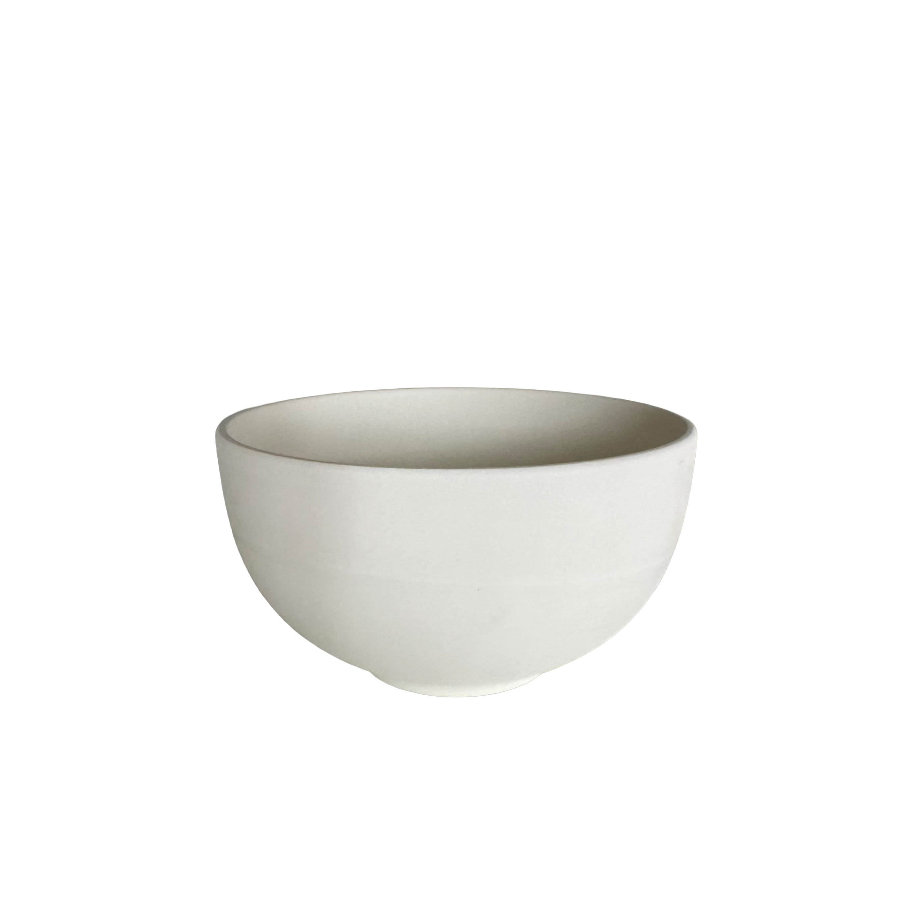
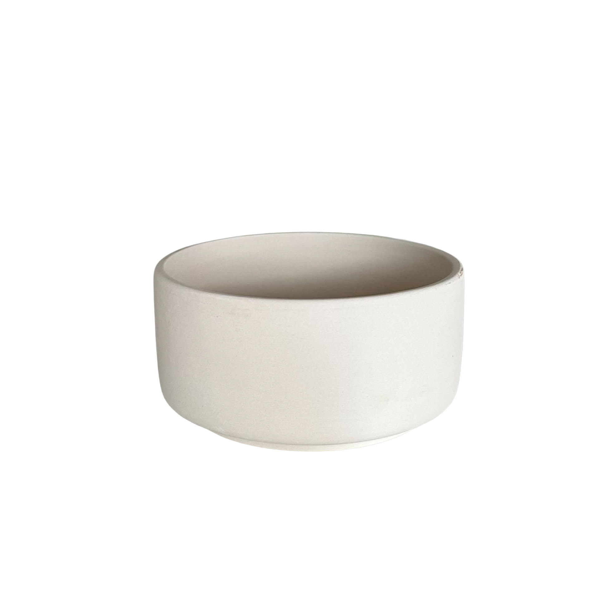
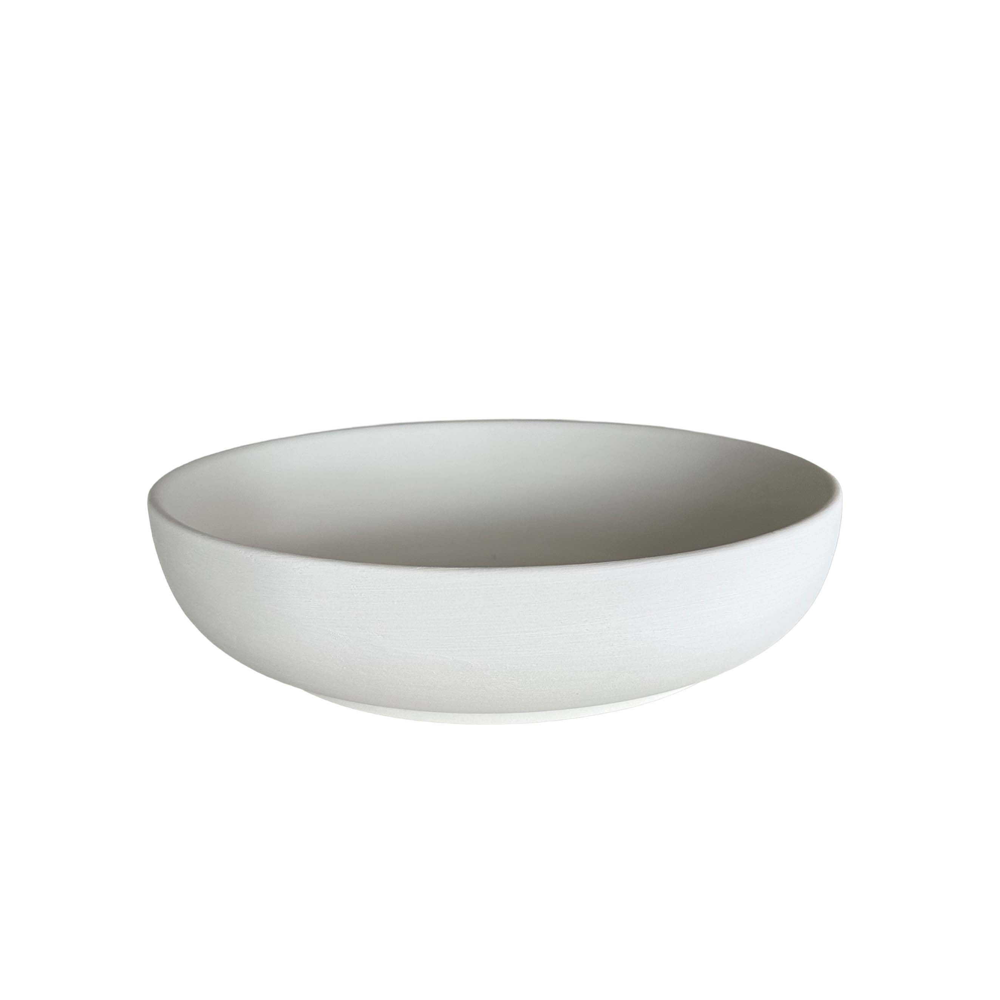

Apostamos que o teu ramen, cereais ou massa vão saber ainda melhor numa destas.

€18,00

€28,00

€28,00

€32,00
Doa €1 para caridade
€32,00

€32,00

€32,00

€22,50

€23,50
Doa €1 para caridade
€34,50

€32,50
Consulta as nossas FAQ para detalhes sobre o nosso estúdio, o processo de pintura e tire suas dúvidas.
Visitar FAQ